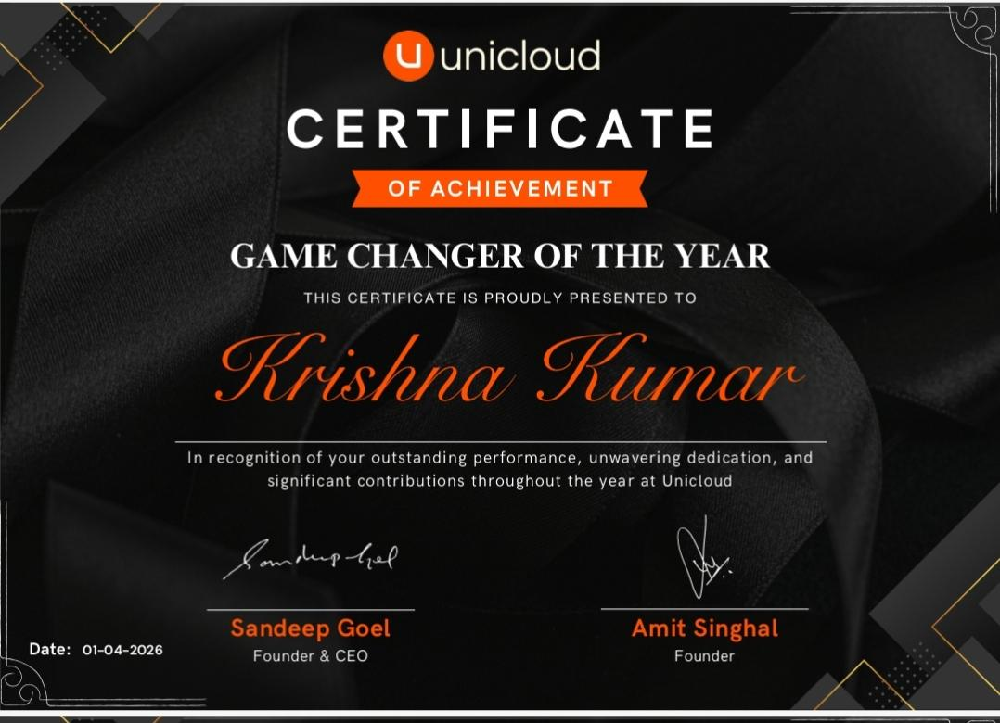
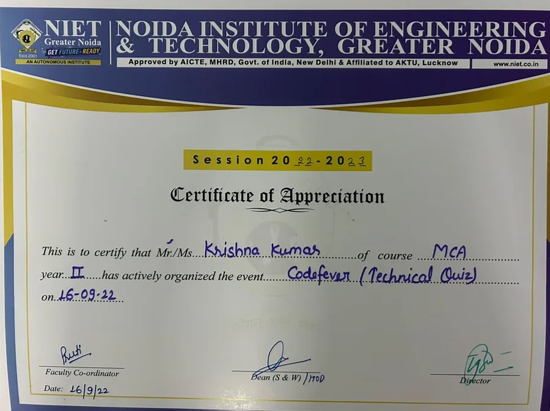
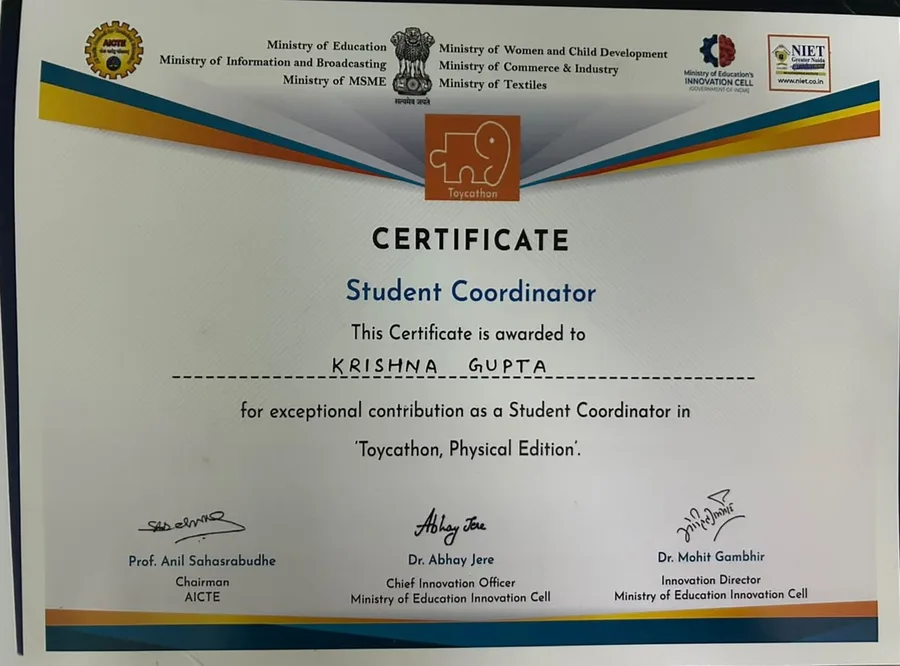
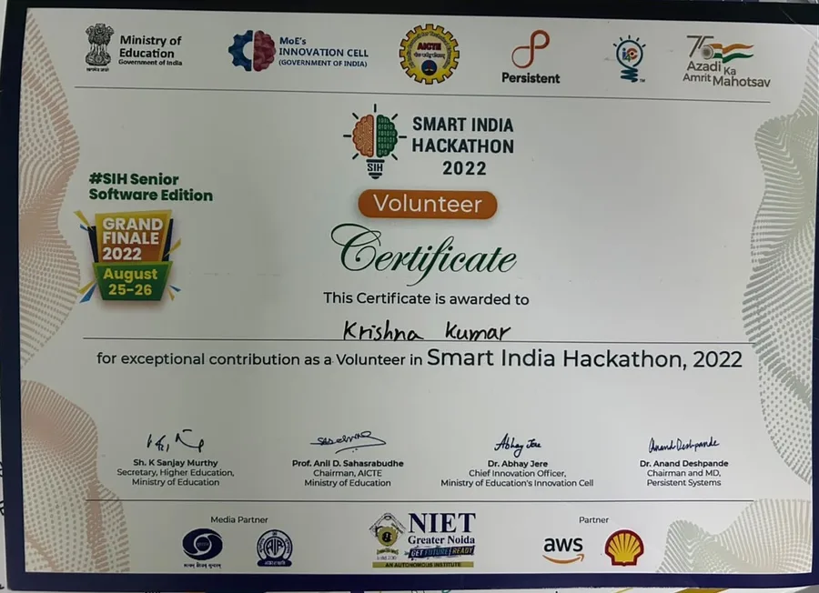

I am a Senior Software Engineer specializing as a
Senior software engineer with 3+ years turning large, messy geospatial datasets into fast, production-grade systems. Currently building unistak AI, an agentic AI platform, at Unicloud Labs.
Languages
Java, Kotlin, JavaScript, C#, SQL
Backend
Spring Boot, Spring Data JPA, Hibernate, .NET, NestJS
Frontend
Angular, HTML, CSS, Bootstrap, Tailwind CSS, Vite
Databases
PostgreSQL, PostGIS, MongoDB, MySQL
Caching & Messaging
Redis, Apache Kafka
DevOps & CI/CD
Docker, Kubernetes, Jenkins
Testing
JMeter, Playwright
Tools
Git, Postman, GeoServer, QGIS, Android Studio
AI & Agentic Tools
Agentic AI, LLM/VLM Routing, Vector Search (MongoDB), RBAC, SSO, Agents/Skills/Tools frameworks
At Unicloud Labs, I'm currently building unistak AI — an agentic AI platform spanning multi-agent orchestration, vector search, and LLM/VLM routing.
Agentic AI
Designing autonomous agent workflows and tool-use loops.
Multi-agent systems
Agent orchestration, task delegation, inter-agent communication.
Vector databases
Similarity search and embedding pipelines for retrieval.
LLM / VLM routing
Cost- and latency-aware routing across language and vision-language models.
RAG pipelines
Retrieval-augmented generation over large document and geospatial corpora.
Prompt & context engineering
Structured prompting, context management, evaluation loops.
Senior Software Engineer
Jul 2023 — Presentunistak AI Currently building
- Designing role-based access control (RBAC) for multi-tenant agent access
- Building an LLM/VLM router for cost- and latency-aware model selection
- Vector search layer on MongoDB for embeddings and retrieval
- SSO integration for authentication across the platform
- Framework for agents, skills, and tools — composable agentic AI building blocks
GNDB — Geographic Names Database
- Built role-based Admin, Vendor & Super Admin dashboards with secure auth
- Engineered scalable REST APIs in Spring Boot for geospatial data management
- Optimized PostgreSQL/PostGIS queries and indexing — 35% performance gain
- Processed large-scale GIS datasets with QGIS and GeoServer
- Integrated the Bhashini API for multilingual support
GNDB — Android Application
- Developed the GNDB Android app in Kotlin using Android Studio, as part of the field data-collection team
- Built an offline-first data sync layer so field surveyors can capture geographic names data with no network connectivity
- Implemented local caching and background sync for low-bandwidth rural network conditions
- Coordinated with the backend team to align the mobile sync contract with the GNDB REST APIs
AMRUT 2.0 — Urban Transformation Platform
- Full-stack geospatial platform with secure role-based access control
- DEM & orthomosaic visualization using Cesium and Leaflet
- Managed large-scale spatial datasets across PostgreSQL, PostGIS, GeoServer
- Azure Blob Storage for scalable file management
- Containerized and deployed with Docker
IndiaMaps.gov.in
- Backend data ingestion pipelines for large-scale geospatial datasets
- Optimized 2D map visualization features with GIS tooling
- Integrated spatial datasets with PostgreSQL/PostGIS
- REST APIs serving map layers and geospatial data dynamically
- Improved rendering performance and data accuracy
IRGVAP — CRIS Railway Video Analytics
- Secure admin and vendor modules for railway video data
- Configured media server, optimized video processing workflows
- Improved file processing efficiency through backend optimization
Smartlabs.pro
- Alert management system and reporting dashboards for infra monitoring
- Cloud API integration for VM orchestration & provisioning
- Async task processing via Pub/Sub messaging
- API/UI testing with JMeter and Playwright
- Recognized with the "Game Changer" award for high-impact work
Software Engineer Intern
Jan 2023 — May 2023- Developed REST APIs using Spring Boot and MySQL
- Assisted in Docker-based deployment pipelines
- Contributed to backend documentation and testing workflows
Do Practice
A free practice platform built for students and self-learners to sharpen their skills — built and shipped independently, outside of work.
HeyyBaby
A playful learning app for kids, designed to make early learning feel like play — a personal project built for a younger audience.
"Game Changer of the Year" at Unicloud Labs (Apr 2026), for high-impact geospatial solutions and system performance work.
Improved geospatial query performance by 35% through targeted PostGIS optimization.
Designed a scalable microservices architecture for GIS-based applications.
Built production-grade REST APIs handling large-scale datasets.
Implemented asynchronous processing using messaging queues for high-throughput workflows.


Codefever — Technical Quiz
Organized Codefever, a technical quiz event, during my MCA at NIET Greater Noida (Sep 2022).

Toycathon — Student Coordinator
Served as Student Coordinator for Toycathon (Physical Edition), a Ministry of Education Innovation Cell initiative.

Smart India Hackathon 2022
Volunteered at the SIH 2022 Grand Finale, a nationwide innovation initiative by the Ministry of Education.